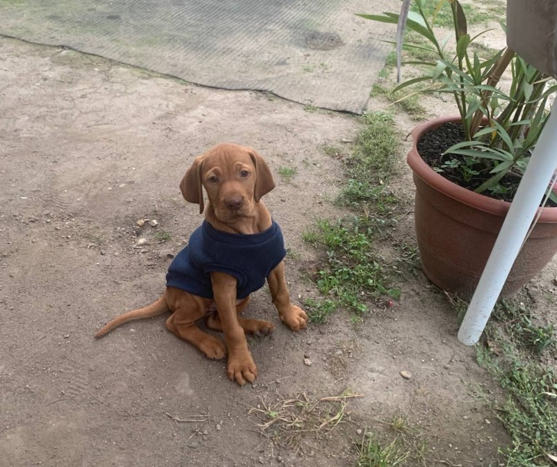

Vizsla
A vizslák a leggyakrabban használt vadászkutyák. Mindegyikükre vonatkozik, hogy a vadásznak megmutatják az általuk észlelt vadat. Ezt angolul „pointing”-nak (jelentése: mutatás) nevezik. Ilyenkor némán felveszik a jelzőpózt. Ez a jelzőpóz általában az egyik mellső láb felemelését jelenti, a fej és a farok mozdulatlanul a hát vonalával van egy síkban. A testbeszédükkel a vad felé mutatnak.